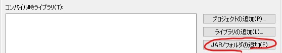

NetBeansを使って、「Hello World」の表示を行うImageJプラグインを作ってみます。
大まかな流れとしては、以下のようになります。
- 新規プロジェクトの作成
- 新規クラスの作成
- Ant用"build.xml"の編集
- ビルド実行
build.xmlは、ビルド時のさまざまな動作（タスク）を記述したものです。
ここでは、作成したclassファイルをpluginsフォルダに移動する動作を追加します。
ImageJでは起動時に、pluginsフォルダにあるプラグイン（classファイル）をメニューに追加するからです。
「Hello World」の表示を実現するための必要最小限の説明を書きます。
（NetBeans9以降、プラグインのインストールなどを行わないと日本語表示されません。分かりにくそうな部分は英語表示の画面を記載しておきます。）
1. 新規プロジェクトの作成
- ファイル ⇒ 新規プロジェクト ⇒ カテゴリー ⇒ Javaクラス・ライブラリ ⇒次>
NetBeans8 日本語表示
NetBeans16 英語表示 - プロジェクト名を「ij_tools」 ⇒ 終了
- 例では、ij_toolsとしましたが、”_”の入った好きな名前で構いません。
名前に「plugins」の語句が入らないようにしてください。ImageJのメニューに登録されるプラグインの階層がおかしくなる場合があります。
- 例では、ij_toolsとしましたが、”_”の入った好きな名前で構いません。
- プロジェクト ウィンドウのij_toolsを右クリックして、プロパティを開きます
- 「ライブラリ」の設定
- Javaプラットフォームを選択します。もし新しく追加する場合は、プラットフォームの管理 ⇒ プラットフォームの追加を行ってください。
NetBeans8 日本語表示
NetBeans16 英語表示
- JAR/フォルダの追加 ⇒ ImageJ.exeのフォルダにある「ij.jar」を選択 ⇒ 開く
NetBeans8 日本語表示

NetBeans16 英語表示
- Javaプラットフォームを選択します。もし新しく追加する場合は、プラットフォームの管理 ⇒ プラットフォームの追加を行ってください。
- 「ビルド－パッケージング」の設定
- 「コンパイル後にJARをビルド」のチェックを外す
NetBeans8 日本語表示
NetBeans16 英語表示
- 「コンパイル後にJARをビルド」のチェックを外す
- 「実行」の設定
- メイン・クラスに、「ij.ImageJ」を入力してください
- 作業ディレクトリに「.（カンマ）」を入力してください
2. 新規クラスの作成
実際には、新規にJavaクラスを追加します。
今回は、こちらからJavaファイルをダウンロードします。
（Rawボタンを右クリックして保存してください）
”ファイル”ウィンドウのsrcフォルダに、ダウンロードした「hello_world.java」をドラッグ＆ドロップします。
3. Ant用"build.xml"の編集
ファイル ウィンドウのbuild.xmlのプラスマークをクリックして展開し、「-post-compile」（デフォルトでは灰色）を探してください。
<target name="-post-compile">
<!-- Empty placeholder for easier customization. -->
<!-- You can override this target in the ../build.xml file. -->
</target>以下のように、ファイルの移動を実行するタスクを追加します。
こうすることで、コンパイル後、hello_world.classがpluginsフォルダに移動します。
<target name="-post-compile">
<!-- Empty placeholder for easier customization. -->
<!-- You can override this target in the ../build.xml file. -->
<move file="${build.classes.dir}/hello_world.class" todir="plugins" />
</target>実際の画面は以下のようになります。
実際に編集されるファイルは、「nbproject」フォルダの「build-impl.xml」です。
使うタスクは、「Copyタスク」、「Moveタスク」、「Deleteタスク」、「jarタスク」あたりでしょうか。
詳しい記法の説明は、Google検索「ant copyタスク」などで、調べてみてください。
4. ビルド実行
実行 ⇒ プロジェクトを消去してビルド。
その後、実際の動きを確認したい場合は、「プロジェクトを実行」をクリックするか、もしくはF6を押してください。
ブレークポイントを利用したい場合は、デバッグ ⇒ プロジェクトをデバッグ。
クリックすると、